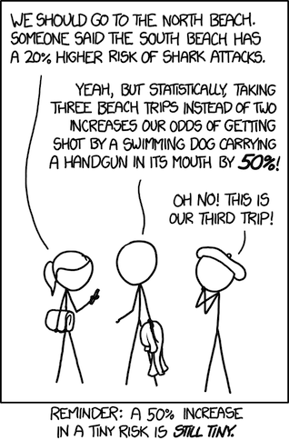

Probabilty Fundamentals#

Objectives#
Describe the fundamentals of probability theory
Describe set theory and its terminology
Define the size of sets with permutations and combinations
Define conditional probability
Probability Theory#
Probability theory is the study of the frequency of a given event occuring with respect to all possible events. In this section we’ll discuss the event space & sets, calculate the probability of events, and discuss the relevance of probability theory in data science.
What should I care about probabilities?#
Studying probabilities allows us to make better and more informed decisions, based on data previously collected. For example, understanding the fact that it is nearly impossible for us to ever win the lottery from a probabilistic standpoint deters us from using it as a source of income.
Probability theory also lies at the heart of making inferences using our data, which is what statistics is all about!
Set Theory#
In probability theory, a set is a well-defined collection of objects.
If an element \(x\) belongs to a set \(S\), then you’d write \(x \in S\). On the other hand, if \(x\) does not belong to a set \(S\), then you’d write \(x\notin S\).
In Python, if I want to make a set, I can use the base function set(), or I can use ‘{’ and ‘}’.
a = set([1, 2])
b = {1, 2}
a == b
a1 = {2, 1}
a1 == a
Empty Set#
The empty set, written as \(\emptyset\) or { }, has no elements. Just remember that in Python, {} will initiate an empty dictionary, not a set.
type({})
m = set()
type(m)
print(m)
Iterables#
a = set(['greg'])
b = {'greg'}
c = set('greg')
a == b
a == c
a
c
Subsets#
Set \(T\) is a subset of set \(S\) if every element in set \(T\) is also in set \(S\). The mathematical notation for a subset is \(T \subset S\).
c
d = set(['g', 'r'])
d.issubset(c)
The empty set is a subset of every set.
m.issubset(c)
Set Operations#
The union of 2 sets \(S\) and \(T\) is the set of elements of either \(S\) or \(T\), or in both. We denote this with the symbol \(\cup\).
The intersection of two sets \(S\) and \(T\) is the set that contains all elements of \(S\) that also belong to \(T\). We denote this with the symbol \(\cap\).
Example#
We are trying to create rooming arrangements based on staff interest for a staff trip.
Who should room with whom based on shared interests?
Robin = {"art", "traveling", "wine", "doodling", "tech", "gadgets"}
Rob = {"rock-climbing", "traveling", "dad jokes", "ice cream"}
Alison = {"wine", "traveling", "Schitts Creek", "dogs"}
Su = {"Schitts Creek", "dogs", "tarot card reading", "croquet", "taxonomy"}
Molly = {"wine", "ice cream", "dogs", "zookeeping", "traveling"}
Robin.intersection(Alison)
Rob.intersection(Alison)
Prompt: What would the union of the sets Rob and Alison tell us?
Rob.union(Alison)
Probability Terminology#
An outcome is a possible result of a random phenomenon (e.g. a 5 on a six-sided die)
A sample space is the set of all possible outcomes for a random phenomenon (e.g. {1, 2, 3, 4, 5, 6} for rolling a six-sided die)
An event is a specific outcome of a random phenomemon (e.g. actually rolling a six-sided die and getting a 5)
Probability using Sets#
In its most basic form, the probability of an event occuring is the size of the successful outcome set divided by the size of the sample space.
Example: What is the probability of rolling an even number on a six-sided die?
Successful outcomes: {2, 4, 6} has size 3
Sample space: {1, 2, 3, 4, 5, 6} has size 6
Probability = 3/6 = 1/2 = 50%
We sometimes write probability statements using notation like \(P(E) = 0.5\), where \(E\) is an event, such as rolling an even number on a six sided die.
Joint Probability#
Sometimes we want to know the probability of two different events occuring - we refer to this as joint probability.
Events \(A\) and \(B\) are independent when the outcome of \(A\) has no bearing on the outcome of \(B\). (e.g. rolling a die and tossing a coin).
If \(A\) and \(B\) are independent, the probability that both \(A\) and \(B\) happen is:
If \(A\) and \(B\) are independent, the probability that either \(A\) or \(B\) happens is:
AND Question: What is the probability of rolling a 5 on a die and getting a tails on a coin toss?
OR Question: What is the probability of rolling a 5 on a die or getting a tails on a coin toss?
Conditional Probability#
Fermat and Pascal: The Unfinished Game#
\(\rightarrow\) This example borrowed from Peter Norvig’s excellent repo here.
 1654  1654 |
Consider a gambling game consisting of tossing a coin repeatedly. Player H wins the game as soon as a total of 10 heads come up, and T wins if a total of 10 tails come up before H wins. If the game is interrupted when H has 8 heads and T has 7 tails, how should the pot of money (which happens to be 100 Francs) be split? Here are some proposals, and arguments against them:
It is uncertain, so just split the pot 50-50.
No, because surely H is more likely to win.In proportion to each player’s current score, so H gets a 8/(8+7) share.
No, because if the score was 0 heads to 1 tail, H should get more than 0/1.In proportion to how many tosses the opponent needs to win, so H gets 3/(3+2).
This seems better, but no, if H is 9 away and T is only 1 away from winning, then it seems that giving H a 1/10 share is too much.
In 1654, Blaise Pascal and Pierre de Fermat corresponded on this problem, with Fermat writing:
Dearest Blaise,
As to the problem of how to divide the 100 Francs, I think I have found a solution that you will find to be fair. Seeing as I needed only two points to win the game, and you needed 3, I think we can establish that after four more tosses of the coin, the game would have been over. For, in those four tosses, if you did not get the necessary 3 points for your victory, this would imply that I had in fact gained the necessary 2 points for my victory. In a similar manner, if I had not achieved the necessary 2 points for my victory, this would imply that you had in fact achieved at least 3 points and had therefore won the game. Thus, I believe the following list of possible endings to the game is exhaustive. I have denoted ‘heads’ by an ‘h’, and tails by a ‘t.’ I have starred the outcomes that indicate a win for myself.
h h h h * h h h t * h h t h * h h t t * h t h h * h t h t * h t t h * h t t t t h h h * t h h t * t h t h * t h t t t t h h * t t h t t t t h t t t t
I think you will agree that all of these outcomes are equally likely. Thus I believe that we should divide the stakes by the ration 11:5 in my favor, that is, I should receive (11/16)×100 = 68.75 Francs, while you should receive 31.25 Francs.
I hope all is well in Paris,
Your friend and colleague,
Pierre
Pascal agreed with this solution, and replied with a generalization that made use of his previous invention, Pascal’s Triangle. There’s even a book about it.
A New Condition#
It’s an obvious point that the probability of either man winning depends on the results of the coin flips so far. One might like to know not just what, say, Fermat’s chances of winning are at this point but also what his chances of winning would be given that the next flip results in a ‘heads’. This is asking about a conditional probability.
The probability that Fermat wins the game may be 68.75%, but what would it be if the next flip is ‘heads’?
Let’s define…
Event \(F\) as Fermat winning the game.
Event \(H\) as the next flip turning up heads
We can write \(P(F | H)\) as the conditional probability that Fermat wins given that the next flip is heads.
If the next flip is heads, this would make the score 9H - 7T, and so the remaining possible outcomes would then be:
H (50% chance; Fermat wins 10H-7T)
TH (25% chance; Fermat wins 10H-8T)
TTH (12.5% chance; Fermat wins 10H-9T)
TTT (12.5% chance; Fermat loses 9H-10T)
So the probability that Fermat wins, given that the next flip is ‘heads’, \(P(F | H)\), is 87.5%.
The probability of Fermat winning has increased, which is to say that the events of (a) the next flip being ‘heads’ and (b) Fermat winning the game are not independent: (a) makes (b) more likely.
Conditional Probability Rules#
When events are independent, the rule for probabilistic AND (I’ll use ‘\(\cap\)’ below) is simple:
\(P(a\cap b) = P(a)\times P(b)\).
But the more general rule, which includes non-independent events, is:
\(\huge P(a\cap b) = P(a | b)\times P(b)\).
In fact, this is the definition of conditional probability. Rearranging:
\(\huge P(a | b) = \frac{P(a\cap b)}{P(b)}\)
Note that, when \(a\) and \(b\) are independent, then we have:
\(P(a | b) = \frac{P(a\cap b)}{P(b)} = \frac{P(a)\times P(b)}{P(b)} = P(a)\).
Conditional Probability Example#
Let’s see how we can use these definitions to solve a conditional probability problem.
Suppose we have the following probabilities:
The probability of rain tomorrow is 0.8;
The probability that I take my umbrella tomorrow, given that it rains, is 0.9.
What is the probability that both (a) it rains tomorrow and (b) I take my umbrella?
prob_rain = 0.8 # P(r)
prob_umb_if_rain = 0.9 # P(u | r)
prob_rain_and_umb = 0.8 * 0.9 # P(r AND u)
prob_rain_and_umb
Level Up: Bayes Theorem#
Intuitively, we expect that \(P(a\cap b) = P(b\cap a)\), so we could equally well write:
\(P(a\cap b) = P(b | a)\times P(a)\).
This equivalence leads to an important theorem of conditional probability:
\(P(a | b)\times P(b) = P(b | a)\times P(a)\)
Thus:
\(\huge P(a | b) = \frac{P(a)\times P(b | a)}{P(b)}\).
This is Bayes’s Theorem. We’ll have more to say about this in a later lesson.
The Law of Total Probability#
Sometimes we want to calculate an unconditional probability by making use of some conditional probabilities. Suppose we want to calculate the probability of \(e\), the event that Two-Face will free his hostages. And suppose that we already know:
\(P(e | H) = 0.9\), and
\(P(e | T) = 0.1\),
where \(H\) is the event of a particular coin toss coming up “heads” and \(T\) is the event of that same coin toss coming up “tails”. Suppose we also know that the coin is weighted unfairly, in such a way that the coin has a 60% chance of coming up “tails” and a 40% chance of coming up “heads”.
Notice that \(H\) and \(T\) together have an interesting relationship. In particular:
\(P(H\cap T) = 0\), i.e. the two events are mutually exclusive; and
\(P(H\cup T) = 1\), i.e. the two events are jointly exhaustive of all possibilities.
Any set of two or more events with these two features (where, strictly, for no event \(z\) do we have \(P(z) = 0\)) is said to partition the space of possibilities. In our case, we have \(\Omega = \{H, T\}\).
For an aribtrary partition, \(\Omega = \{\xi_1, ..., \xi_n\}\), the law of total probability tells us the following:
\(P(e) = P(e\cap\xi_1) + ... + P(e\cap\xi_n) = P(e | \xi_1)\times P(\xi_1) + ... + P(e | \xi_n)\times P(\xi_n)\).
Going back to our example with Two-Face, we can now solve the original question of the probability that Two-Face will free his hostages.
What we really want to know is:
\(P(e)\), the probability that Two-Face will free his hostages.
We calculate:
\(P(e) = P(e | H)\times P(H) + P(e | T)\times P(T) = (0.9)(0.4) + (0.1)(0.6) = 0.36 + 0.06 = 0.42\). Not great; we may need Batman to step in and alter the conditional probabilities.
Level Up: Permutations & Combinations#
Permutations and combinations are helpful when we’re trying to solve certain counting problems. Formulas help us calculate the total number of possible outcomes in various scenarios.
Permutations#
Use these when ordering matters: How many different arrangements can you get out of a number of elements?
The number of arrangements of \(r\) elements out of a total of \(n\) elements is given by: \(\Large\frac{n!}{(n – r)!}\).
Why is this the right formula?
We have:
\(n\) choices for the item in the first position;
\(n-1\) choices for the item in the second position (since we’ve reserved one of the original items for the first position);
… ;
and \(n-(r-1)=n-r+1\) choices for the item in the last position.
So that’s \(n!\) without the terms below \(n-r+1\), i.e. \(\frac{n!}{(n-r)!}\).
from itertools import permutations
l = list(permutations(range(1, 4)))
print(l)
Easiest Scenario#
How many ways are there of arranging the letters in ‘damico’?
6*5*4*3*2*1
from math import factorial
factorial(6)
Intermediate Scenario#
How many ways are there of arranging the letters in ‘greg’?
eggr, egrg, ergg gegr, gerg, gger, ggre, greg, grge regg, rgeg, rgge
Level Up Scenario#
You are trying to break the code - to hack into the mainframe, and stop the KGB from launching US missiles remotely.
You know the password is some 5 letter anagram of a subset of the word “pochemuchka”
How many potential passwords are there? i.e., how large is the set of password options?
from itertools import permutations
l = list(permutations("pochemuchka", 5))
len(l)
11 * 10 * 9 * 8 * 7
len(set(l))
Combinations#
Ordering does not matter.
How many different selections can you get out of a number of elements?
The number of selections of \(r\) out of a total of \(n\) elements is given by: \(\Large{n\choose r} = \frac{n!}{r!(n – r)!}\).
Why is this the right formula?
We have:
The count is related to the number of associated permutations of \(r\) elements, choosing from a total of \(n\), namely \(\frac{n!}{(n-r)!}\).
But since order doesn’t matter, we need to divide our count by the number of ways of arranging the \(r\) objects we’ve chosen. And we know what that number is: It’s simply \(r!\).
So our total count will be \(\frac{n!}{(n-r)!r!}\).
Easier Scenario:#
How many ways are there of choosing two students from a group of six?
factorial(6) / (factorial(2) * factorial(4))
Level Up Scenario#
What are the chances of getting exactly 3 “heads” on 5 flips?
\(\rightarrow\) We’ll look at the binomial distribution soon!
from count_class import Counter
c2 = Counter(arr='david')
c2.calc(3)
c2.final_list
Level Up: Random Variables#
A random variable has an outcome that can take on different values, resulting from a random phenomenon
A random variable can either be continuous or discrete
Continuous: the variable can have any values within a range (e.g. a person’s height)
Discrete: the variable can only have a finite subset of values within a range (e.g. number of cars owned)
Level Up: Three Events#
What is the probability of having at least one of three events?
\( P(A [or] B [or] C) = P(A) + P(B) + P(C) - P(A [and] B) - P(A [and] C) - P(B [and] C) + P(A [and] B [and] C) \)